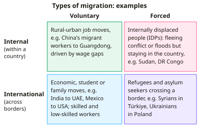

A-level Geography Year 13 · Topic 10
Migration, identity and sovereignty
Migration, identity and sovereignty explores why people move, how this changes places, and how states control their borders.
We will study global migration patterns, causes, impacts and management.
Then we look at identity, nationalism and cultural change, and sovereignty, borders and contested territory.
- 6 subtopics
- 172 questions
- Free: 10.1 notes and 10 questions
In this topic
- 10.1Global migration patterns and flows: voluntary, forced, internal and internationalFree below · 32 questions
- 10.2Causes of migration: push and pull factors, barriers and migration theoryOpen in Full Marks · 24 questions
- 10.3Impacts of migration on origin and destination areas: remittances, demography, economy and societyOpen in Full Marks · 30 questions
- 10.4Managing migration: national policies, international agreements and a refugee/migration corridor case studyOpen in Full Marks · 23 questions
- 10.5Identity, nationalism and cultural change: diaspora, multiculturalism and sense of placeOpen in Full Marks · 38 questions
- 10.6Sovereignty, borders and contested boundaries: state power, geopolitical disputes and borderingOpen in Full Marks · 25 questions
10.1 · Free notes
Global migration patterns and flows: voluntary, forced, internal and international

Key points
- Migration is the movement of people to live in a new place. It is voluntary when people choose to move (work, study, family) and forced when they flee conflict, persecution or disaster.
- Internal migration happens within one country, e.g. over 250 million migrant workers moving from rural China to coastal cities. Internal migrants are estimated to outnumber international migrants.
- UN DESA estimates about 304 million international migrants in 2024, roughly 3.7% of the world population. This is up from about 153 million in 1990, but most people still live in their country of birth.
- Main flows: South–North (Mexico–USA, North Africa–Europe), South–South (Afghanistan–Iran and Pakistan, Myanmar–Thailand) and North–North (Poland–UK). South–South and South–North flows are of comparable size.
- Intra-regional migration is very important. A majority of African migrants stay within Africa, and proximity, shared language and open borders explain much of Asia's flows.
- The USA hosts the most international migrants (about 50 million), followed by Germany, Saudi Arabia, Russia and the UK. Gulf states such as Qatar and the UAE have 75–90% migrant populations because of temporary labour recruited under the kafala sponsorship system.
- Forced migration categories: refugees (outside their country with a well-founded fear of persecution, 1951 Convention), asylum seekers (claim undecided), internally displaced persons (IDPs) (still inside their country) and stateless people.
- UNHCR reports over 115 million forcibly displaced people in 2025, a recent record. About 60% are IDPs, and major sources include Sudan, Syria, Afghanistan, Ukraine and Venezuela. Roughly two-thirds of refugees are hosted in neighbouring countries and about 70% in low- and middle-income countries.
- Net migration rate = (immigrants − emigrants) ÷ total population × 1000, in migrants per 1000 per year. A positive value means net inflow.
- Mixed migration and irregular migration blur the voluntary/forced divide. Routes such as the central Mediterranean and the Darién Gap carry people with economic and protection motives together, so labels like 'economic migrant' are contested.
- Zelinsky's mobility transition links migration to development. Early stages show rural–urban movement and emigration. Advanced societies show urban–urban circulation and immigration of labour. Diasporas result, and India has the largest (about 18 million).
In more detail
- Scale: about 281 million people lived outside their country of birth in 2020, around 3.6% of the world's population.
- Forced displacement: over 120 million people were forcibly displaced by 2024, a record high.
- Internal migration: most migration is within countries, such as rural to urban moves in China and India.
- Major corridors: Mexico to the USA, India to the Gulf states, and Syria to Turkey.
- South–South migration: roughly as many migrants move between developing countries as from developing to developed ones.
Practice
Global migration patterns and flows: voluntary, forced, internal and international: 10 questions
Pick an answer to check it, or open the answer for the explanation.
1. Which best defines an internally displaced person (IDP)?
- Someone moving voluntarily from a rural area to a city
- Someone granted refugee status in a neighbouring country
- Someone forced to flee home but who remains within their own country
- Someone whose asylum application is awaiting a decision
Show answer
C: Someone forced to flee home but who remains within their own country. IDPs are forced from their homes by conflict, persecution or disaster but have not crossed an international border, so they do not count as refugees under the 1951 Convention.
2. In one year a country of 20 million people receives 300,000 immigrants and loses 200,000 emigrants. What is its net migration rate?
- +0.5 per 1000
- +5 per 1000
- +25 per 1000
- +15 per 1000
Show answer
B: +5 per 1000. (300,000 − 200,000) ÷ 20,000,000 × 1000 = +5 per 1000. +15 is only the immigration rate.
3. Which statement about the scale of global migration is correct?
- About one in four people live outside their country of birth
- International migrants are only about 3–4% of the world's population
- International migrants now outnumber internal migrants
- Global international migrant numbers fell between 1990 and 2020
Show answer
B: International migrants are only about 3–4% of the world's population. UN DESA puts international migrants at about 304 million (2024), roughly 3.7% of people. Numbers rose from about 153 million in 1990, and internal migrants are estimated to outnumber them.
4. Which person is a refugee under the 1951 Refugee Convention?
- An Indian engineer who moved to the USA for a higher salary
- A farmer who moved to Dakar after drought destroyed his crops
- A Nigerian student who moved to the UK to study for a degree
- A journalist who fled to Germany fearing persecution for her political views
Show answer
D: A journalist who fled to Germany fearing persecution for her political views. A refugee is outside their country of nationality with a well-founded fear of persecution (e.g. political opinion). The other cases are voluntary, internal or environmental moves.
5. Which is an example of voluntary internal migration?
- Rural workers in China moving to Guangdong factory jobs
- Syrians moving to Türkiye after 2011
- Rohingya fleeing Myanmar into Bangladesh
- Ukrainians moving to Poland after 2022
Show answer
A: Rural workers in China moving to Guangdong factory jobs. Moving within China for work is internal and chosen, although the hukou system limits migrants' rights. The other options are forced movements across international borders.
6. A Gulf state has a population of 4.0 million, of whom 3.0 million are international migrants. What percentage are migrants?
- 133%
- 75%
- 25%
- 7.5%
Show answer
B: 75%. 3.0 ÷ 4.0 × 100 = 75%. 25% is the share of the population who are not migrants.
7. Which flow is an example of South–South migration?
- Poland to the United Kingdom
- Afghanistan to Iran
- Mexico to the USA
- India to the United Kingdom
Show answer
B: Afghanistan to Iran. Afghanistan to Iran is between countries of the Global South. Mexico–USA and India–UK are South–North, and Poland–UK is North–North.
8. Which statement about where refugees are hosted is correct?
- Refugees are spread evenly between all UN member states
- Most are hosted by high-income countries in Europe
- Most are hosted by low- and middle-income countries, often neighbouring the origin
- The USA hosts the largest number of refugees
Show answer
C: Most are hosted by low- and middle-income countries, often neighbouring the origin. UNHCR data show about two-thirds of refugees are in neighbouring countries and roughly 70% in low- and middle-income countries, e.g. Iran, Türkiye, Colombia, Pakistan and Uganda.
9. In Zelinsky's mobility transition, which is typical of an advanced society?
- Large-scale rural-to-urban migration and high emigration
- Very little movement, mainly for marriage and ceremonies
- Mass colonisation of new frontier land
- Mainly urban-to-urban circulation and immigration of low-skilled labour
Show answer
D: Mainly urban-to-urban circulation and immigration of low-skilled labour. Advanced societies have little rural–urban movement left, mainly circulation between cities, and attract migrant labour from poorer countries.
10. How does an asylum seeker differ from a refugee?
- An asylum seeker remains inside their own country
- There is no difference in legal terms
- An asylum seeker always migrates for economic reasons
- An asylum seeker has applied for protection but the claim is undecided
Show answer
D: An asylum seeker has applied for protection but the claim is undecided. An asylum seeker has asked for international protection and awaits a decision. If the claim succeeds, they are recognised as a refugee.
Keep going in Full Marks
Full Marks has 32 questions on Global migration patterns and flows: voluntary, forced, internal and international (22 more than here), set out in practice levels. You also get notes and 3D models for all 6 subtopics of Migration, identity and sovereignty, plus games, timed exams and past papers.
On your exam board
- AQATopic 3: Global systems and global governance
- OCR ATopic 1.2: Global connections: global migration, Topic 2.2: Global governance: power and borders
- EdexcelTopic 9B: Global development and connections: migration, identity and sovereignty
Not in the Cambridge specification.